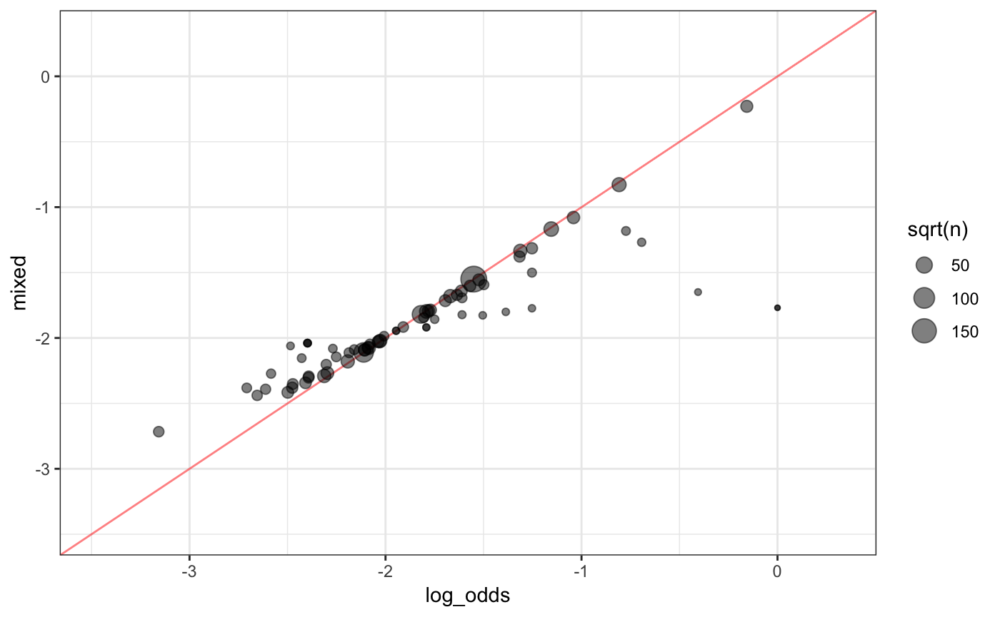

GLM.RmdThis method uses a generalized linear model to estimate the effect of each level of a factor predictor on the outcome. These values are retained to serve as the new encodings for the factor levels. This is sometimes referred to as likelihood encodings. embed has two estimation methods for accomplishing this: with and without pooling.
The example used here is the OkCupid data from Kim and Escobedo-Land (2015)(pdf). In Kuhn and Johnson (2018), these data are used to predict whether a person is in the STEM fields (science, technology, engineering, and mathematics). One predictor, geographic location, is a factor variable. The frequencies of location in the data set used here vary between 1 person and 31064 per location. There are 135 locations in the data. Rather than producing 134 indicator variables for a model, a single numeric variable can be used to represent the effect or impact of the factor level on the outcome. In this case, where a factor outcome is being predicted (STEM or not), the effects are quantified by the log-odds of the location for being STEM.
We first calculate the raw log-odds for the data (independent of any model):
library(tidyverse)
library(embed)
data(okc)
props <- okc %>%
group_by(location) %>%
summarise(
prop = mean(Class == "stem"),
log_odds = log(prop/(1-prop)),
n = length(Class)
)
props## # A tibble: 135 x 4
## location prop log_odds n
## <chr> <dbl> <dbl> <int>
## 1 alameda 0.143 -1.79 910
## 2 albany 0.163 -1.64 233
## 3 arcadia 0 -Inf 1
## 4 ashland 0 -Inf 1
## 5 atherton 0.222 -1.25 45
## 6 bayshore 0 -Inf 3
## 7 belmont 0.222 -1.25 243
## 8 belvedere tiburon 0.0702 -2.58 57
## 9 benicia 0.0837 -2.39 203
## 10 berkeley 0.140 -1.82 4212
## # ... with 125 more rows# later, for plotting
rng <- extendrange(props$log_odds[is.finite(props$log_odds)], f = 0.1)In subsequent sections, a logistic regression model is used. When the outcome variable is numeric, the steps automatically use linear regression models to estimate effects.
In this case, the effect of each location can be estimated separately for each factor level. One method for conducting this estimation step is to fit a logistic regression with the STEM classification as the outcome and the location as the predictor. From this, the log-odds are naturally estimated by logistic regression.
For these data, a recipe is created and step_lencode_glm is used:
okc_glm <- recipe(Class ~ ., data = okc) %>%
# specify the variable being encoded and the outcome
step_lencode_glm(location, outcome = vars(Class)) %>%
# estimate the effects
prep(training = okc)The tidy method can be used to extract the encodings and are merged with the raw estimates:
estimates <- tidy(okc_glm, number = 1)
estimates## # A tibble: 136 x 3
## level value terms
## <chr> <dbl> <chr>
## 1 alameda -1.79 location
## 2 albany -1.64 location
## 3 arcadia -14.6 location
## 4 ashland -14.6 location
## 5 atherton -1.25 location
## 6 bayshore -14.6 location
## 7 belmont -1.25 location
## 8 belvedere tiburon -2.58 location
## 9 benicia -2.39 location
## 10 berkeley -1.82 location
## # ... with 126 more rowsestimates <- estimates %>%
dplyr::select(-terms) %>%
set_names(c("location", "glm")) %>%
inner_join(props, by = "location")For the locations with n > 1, the estimates are effectively the same:
estimates %>%
dplyr::filter(is.finite(log_odds)) %>%
mutate(difference = log_odds-glm) %>%
dplyr::select(difference) %>%
summary()## difference
## Min. :-2.016e-13
## 1st Qu.:-6.661e-15
## Median :-7.772e-16
## Mean :-2.146e-16
## 3rd Qu.: 6.661e-16
## Max. : 3.666e-13Note that there is also a effect that is used for a novel location for future data sets that is the average effect:
tidy(okc_glm, number = 1) %>%
dplyr::filter(level == "..new") ## # A tibble: 1 x 3
## level value terms
## <chr> <dbl> <chr>
## 1 ..new -7.79 locationThis method estimates the effects by using all of the locations at once using a hierarchical Bayesian generalized linear model. The locations are treated as a random set that contributes a random intercept to the previously used logistic regression.
Partial pooling estimates each effect as a combination of the separate empirical estimates of the log-odds and the prior distribution. For locations with small sample sizes, the final estimate is shrunken towards the overall mean of the log-odds. This makes sense since we have poor information for estimating these locations. For locations with many data points, the estimates reply more on the empirical estimates. This page has a good discussion of pooling using Bayesian models.
One appraoch to partial pooling is the function step_lencode_bayes uses the stan_glmer function in the rstanarm package. There are a number of options that can be used to control the model estimation routine, including:
opts <-
list(
## the number of chains
chains = 4,
## how many cores to use
cores = 4,
## the total number of iterations per chain (low here for time)
iter = 500,
## set the random number seed
seed = 8779
)Using the default priors, the model is estimated via:
okc_glmer <- recipe(Class ~ ., data = okc) %>%
step_lencode_bayes(
location,
outcome = vars(Class),
options = opts
) %>%
prep(training = okc)This took more time than the simple non-pooled model. The embeddings are extracted in the same way:
estimates <- tidy(okc_glmer, number = 1) %>%
dplyr::select(-terms) %>%
set_names(c("location", "glmer")) %>%
inner_join(estimates, by = "location")
estimates %>% dplyr::select(location, log_odds, glm, glmer)## # A tibble: 135 x 4
## location log_odds glm glmer
## <chr> <dbl> <dbl> <dbl>
## 1 alameda -1.79 -1.79 -1.80
## 2 albany -1.64 -1.64 -1.69
## 3 arcadia -Inf -14.6 -2.00
## 4 ashland -Inf -14.6 -1.96
## 5 atherton -1.25 -1.25 -1.51
## 6 bayshore -Inf -14.6 -2.04
## 7 belmont -1.25 -1.25 -1.32
## 8 belvedere tiburon -2.58 -2.58 -2.30
## 9 benicia -2.39 -2.39 -2.31
## 10 berkeley -1.82 -1.82 -1.82
## # ... with 125 more rowsNote that the n = 1 locations have estimates that are less extreme that the naive estimates. Also,
Let’s see the effect of the shrinkage indued by partial pooling by plotting the naive results versus the new results (finite data only):
estimates %>%
dplyr::filter(is.finite(log_odds)) %>%
ggplot(aes(x = log_odds, y = glmer)) +
geom_abline(col = "red", alpha = .5) +
geom_point(aes(size = sqrt(n)), alpha = .5) +
xlim(rng) + ylim(rng) +
theme_bw()New levels are encoded as:
tidy(okc_glmer, number = 1) %>%
dplyr::filter(level == "..new") ## # A tibble: 1 x 3
## level value terms
## <chr> <dbl> <chr>
## 1 ..new -1.98 locationThe same generalized linear model can be fit using mixed models via a random intercept. The lme4 package can also be used to get pooled estimates via step_lencode_mixed.
okc_mixed <- recipe(Class ~ ., data = okc) %>%
step_lencode_mixed(
location,
outcome = vars(Class),
) %>%
prep(training = okc)
estimates <- tidy(okc_mixed, number = 1) %>%
dplyr::select(-terms) %>%
set_names(c("location", "mixed")) %>%
inner_join(estimates, by = "location")
estimates %>% dplyr::select(location, log_odds, glm, glmer, mixed)## # A tibble: 135 x 5
## location log_odds glm glmer mixed
## <chr> <dbl> <dbl> <dbl> <dbl>
## 1 alameda -1.79 -1.79 -1.80 -1.80
## 2 albany -1.64 -1.64 -1.69 -1.67
## 3 arcadia -Inf -14.6 -2.00 -1.97
## 4 ashland -Inf -14.6 -1.96 -1.97
## 5 atherton -1.25 -1.25 -1.51 -1.50
## 6 bayshore -Inf -14.6 -2.04 -2.03
## 7 belmont -1.25 -1.25 -1.32 -1.31
## 8 belvedere tiburon -2.58 -2.58 -2.30 -2.27
## 9 benicia -2.39 -2.39 -2.31 -2.30
## 10 berkeley -1.82 -1.82 -1.82 -1.82
## # ... with 125 more rowsComparing the raw and mixed model estimates:
estimates %>%
dplyr::filter(is.finite(log_odds)) %>%
ggplot(aes(x = log_odds, y = mixed)) +
geom_abline(col = "red", alpha = .5) +
geom_point(aes(size = sqrt(n)), alpha = .5) +
xlim(rng) + ylim(rng) +
theme_bw()
These values are very similar to the Bayesian estimates.